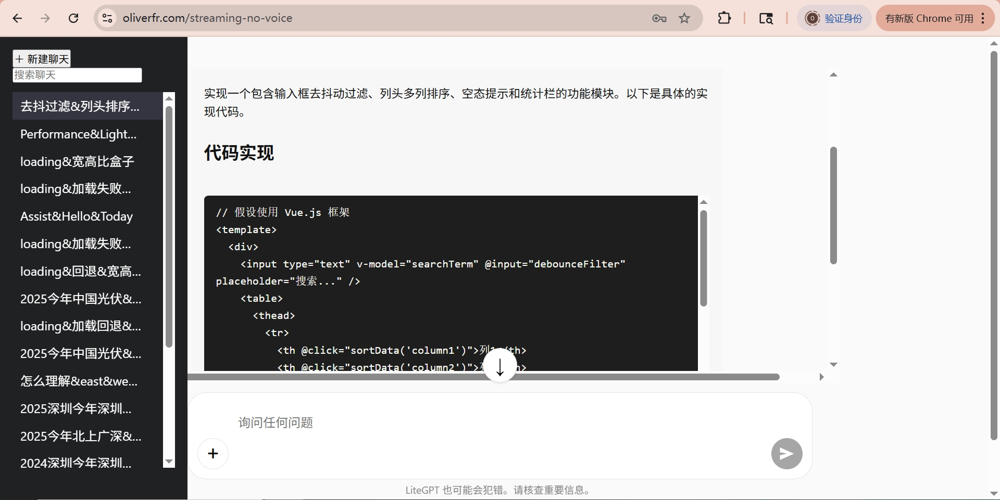

欢迎回到首页，看看 MeFan 最新动态。
认识 MeFan 团队，了解我们的背景、理念与愿景。
问题咨询、商务合作，请在此找到联系方式。



我们专注于无线音频领域，融合最新技术与时尚设计，为您带来舒适与卓越的聆听体验。
在不同场景中，MeFan耳机如何展现卓越表现？
运动时的防水、防汗表现……
地铁、公交、办公室等噪音环境表现……
语音通话、降噪麦克风等……
At Mefan, we’re at the very beginning of something exciting. Though our vision is still in its early stages, we believe deeply in the value of hard work, learning, and steady progress.
We know the path ahead will take time and persistence. Success isn’t immediate, but it’s built step by step. We’re committed to refining our ideas, focusing on quality, and staying true to our mission of creating meaningful audio experiences.
For now, we focus on laying the foundation. We aim to deliver real value to our future customers with every product we create. Your trust means a lot to us as we start this journey. The road may be long, but we’re confident that with time, this vision will take shape.